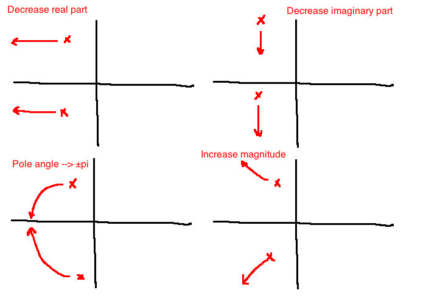

\[\tau \dot{y} = ku\]
or
\[\frac{Y(s)}{U(s)} = \frac{K}{\tau s + 1}\]
or
\[\begin{align}
\dot{x}&=\frac{-x}{\tau} + \frac{K}{\tau} u\\
y &= x
\end{align}\]
Observations:
Step response:
\[y(t) = \mathcal{L}^{-1}\{G(s)U(s)\} = \mathcal{L}^{-1}\left\{\frac{K}{\tau s + 1} \frac{1}{s}\right\} = \mathcal{L}^{-1}\left\{\frac{K}{s} - \frac{K}{s + \frac{1}{\tau}}\right\}\]
\[K(1-e^{\frac{-t}{\tau}}), \quad t \ge 0\]
Observations:
\[\ddot{y}+2\zeta\omega_n \dot{y} + \omega_n^2 y = K\omega_n^2 u\]
or
\[ \frac{Y(s)}{U(s)} = \frac{K\omega_n^2}{s^2 + 2\zeta\omega_n s + \omega_n^2}\]
or
\[\begin{align}
\dot{x} &= \begin{bmatrix}0&1\\-\omega_n^2&-2\zeta\omega_n\end{bmatrix}x + \begin{bmatrix}0\\K\omega_n^2\end{bmatrix}u\\
y &= \begin{bmatrix} 1 & 0\end{bmatrix}x\\
\end{align}\]

\[\begin{align} M \ddot{q} &= u - K_{spring} q - b\dot{q}\\ \frac{Y(s)}{U(s)} &= \frac{\frac{1}{M}}{s^2 + \frac{b}{M}s + \frac{K_{spring}}{M}}\\ \\ \omega_n &= \sqrt{\frac{K_{spring}}{M}}\\ \zeta &= \frac{b}{2 \sqrt{K_{spring}M}}\\ K &= \frac{1}{K_{spring}} \end{align}\]
From the quadratic formula, find the zeroes of the denominator:
\[s = -\zeta \omega_n \pm \omega_n \sqrt{\zeta^2 - 1} = \omega_n\left(-\zeta \pm \sqrt{\zeta^2 - 1}\right)\]

Pole locations are used to categorize the system:
Steady-state gain: \(K\)
Zeroes: none


\[g(t) = K\frac{\omega_n}{\sqrt{1-\zeta^2}} \underbrace{e^{-\zeta \omega_n t}}_\text{decay rate} \sin\underbrace{\left(\omega_n \sqrt{1-\zeta^2} t\right)}_\text{oscillation rate}, \quad t \ge 0\]
Observe: If we fix \(\zeta \in (0,1)\), then larger bandwidth \(\Leftrightarrow\) faster decay
\[\begin{align} u(t) &= 1(t)\\ \Rightarrow U(s) &= \frac{1}{s}\\ \\ Y(s) &= G(s)U(s)\\ \Rightarrow y(t) &= \mathcal{L}^{-1}{G \dot U}\\ &= K\left(1 - \frac{1}{\sqrt{1 - \zeta^2}} e^{-\zeta \omega_n t} \sin\left(\omega_n \sqrt{1 - \zeta^2}t + \theta\right)\right), \quad \theta = \arccos \zeta\\ \end{align}\]

\[\frac{Y(s)}{U(s)} = \frac{\frac{1}{M}}{s^2 + \frac{b}{M}s + \frac{K_{spring}}{M}}\]
\[\begin{align} \zeta &= \frac{b}{2\sqrt{MK_{spring}}}\\ \zeta &\ge \frac{-\ln(\%OS_{max})}{\sqrt{\pi^2 + (\ln\%OS_{max})^2}} =:\zeta_{min}\\ \\ \text{To meet specs:}\\ \frac{b}{2\sqrt{MK_{spring}}} \ge 0.6901\\ \end{align}\]
The angle the poles make is \(\pm(\pi - \arccos \zeta)\).
\[ \zeta \ge \zeta_{min} \Leftrightarrow \theta \le \arccos(\zeta_{min})\]
In this example, \(\theta \le 46^{\circ}\)

Therefore the overshoot spec is not met if there are poles in the shaded region.
Find the condition so that \(T_s \le T_s^{max} = 3\)
\[\begin{align} G(s) &= \frac{\frac{1}{M}}{s^2 + \frac{b}{M}s + \frac{K_{spring}}{M}}\\ \frac{4}{\zeta \omega_n} &\le 3 = T_s^{max}\\ \Leftrightarrow \zeta\omega_n &\ge \frac{4}{T_s^{max}}\\ \Leftrightarrow \frac{b}{2M} &\ge \frac{4}{3}\\ \end{align}\]

Spec: \(T_p \le T_p^{max} = 3 \text{ seconds }\)
\[\begin{align} \omega_n\sqrt{1-\zeta^2} &\le \frac{\pi}{T_p^{max}}\\ \Leftrightarrow \sqrt{\frac{K_{spring}}{M} - \frac{b^2}{4M^2}} &\le \frac{\pi}{3}\\ \end{align}\]


| decrease real part | increase imaginary part | angle of poles to \(\pm \pi\) | increase magnitude | |
|---|---|---|---|---|
| \(\omega_n\) | + | + | no change | + |
| \(\zeta\) | + | - | + | no change |
| %OS | - | + | - | no change |
| \(T_s\) | - | no change | - | - |
| \(T_p\) | no change | - | + | - |